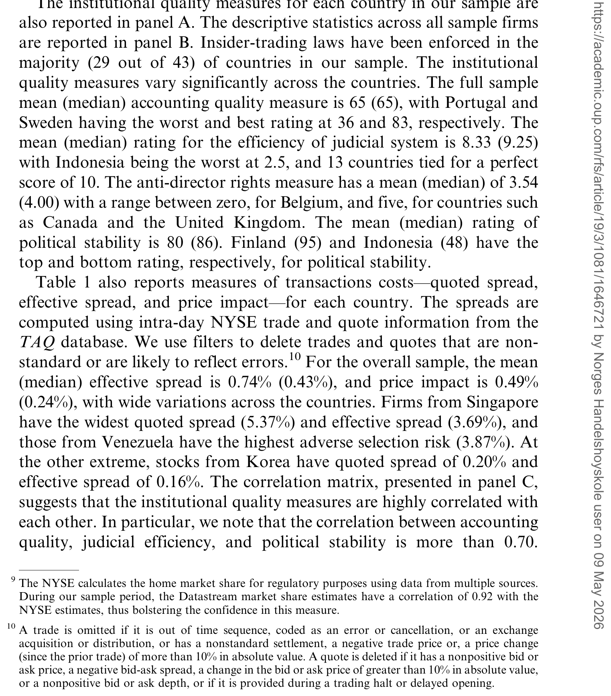
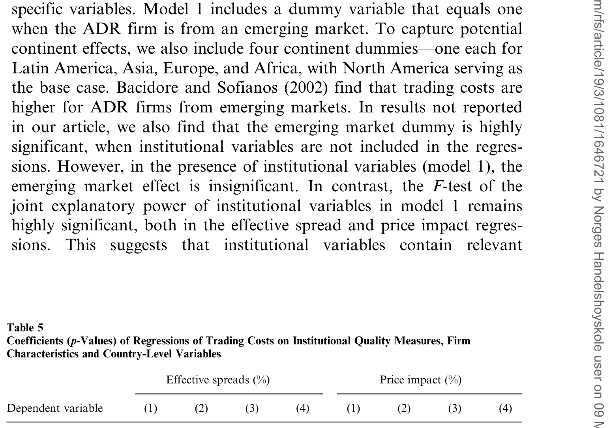
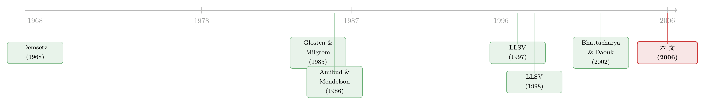

同一张交易台，44 个国家的「制度税」
本文读的是 Eleswarapu & Venkataraman (2006, RFS)：把 44 个国家的 412 只股票放到同一个交易所（纽交所）的同一套交易规则下成交，作者发现，哪怕已经控制了公司层面的市值、成交量、价格、波动率，一只股票的交易成本仍然系统性地取决于它「老家」的制度质量——司法越高效、会计准则越严、政局越稳定，它在纽交所的有效价差和价格冲击就越低；而法系是「法国民法」的国家，其股票交易成本显著高于「英国普通法」国家。
1 一个被「市场结构」反复污染的老问题
先说一个几乎所有人都同意、却又几乎没人能干净验证的猜想：一个国家的法律和政治制度，会影响它的资本市场有多「贵」。
这句话听起来天经地义。一个保护小股东的国家，应该有更宽的市场、更分散的股权、更活跃的交易；一个内幕交易横行、信息披露稀烂的国家，做市商当然要把买卖价差拉得更宽来自保。可问题在于——你怎么证明它？
最直接的做法，是去比较不同国家交易所上股票的交易成本：比一比孟买的价差和伦敦的价差。但这条路从一开始就是堵死的。微观结构 (microstructure) 文献里有一个被反复强调、几乎成为常识的结论：交易成本极度依赖市场结构（见 Stoll, 2000）。做市商制还是竞价制、最小报价单位多大、是否有指定专家、佣金怎么收……这些「交易规则」上的差异，足以把任何制度信号彻底淹没。你以为你在比较「印度的制度 vs 英国的制度」，其实你比较的是「孟买交易所的撮合机制 vs 伦敦交易所的撮合机制」。
于是，一个自然的问题是：有没有办法，把「制度」这个变量单独拎出来，让「市场结构」这个噪声彻底闭嘴？
本文的全部精巧，就藏在对这个问题的回答里。
2 识别策略：把全世界搬到同一张交易台上
作者的设计可以用一句话概括：让来自不同制度环境的股票，在完全相同的市场结构下成交，然后看它们的交易成本还有没有差别。
怎么做到？答案是 美国存托凭证 (American Depository Receipts, ADRs)。ADR 是外国公司在美国挂牌交易的凭证——一家巴西公司、一家印尼公司、一家芬兰公司，它们的 ADR 全都在纽约证券交易所 (NYSE) 上、用同一套交易规则、由同一批专家做市、按同样的报价单位成交。
这就一举锁死了那个最难缠的混淆变量。作者自己把这套设计的好处讲得很清楚：
- 第一，市场结构被完美控制。 44 个国家的股票，制度天差地别，但它们的交易成本不受任何市场结构差异的影响——因为大家都在 NYSE。顺带着，连「佣金」这类非价差成本的跨所差异也一并消失了。
- 第二，公司层面的决定因素被显式控制。 在回归里塞进市值、成交量、股价、波动率，再加上一个很关键的控制变量：本土市场份额 (home market share)，即这只股票有多大比例的成交量是在它本国市场、而非 NYSE 完成的。
- 第三——也是最妙的一点——这个设计是「自我作对」的。 ADR 要上 NYSE，就得满足 SEC 的披露要求、用 form 20-F 把财报调成美国 GAAP、遵守交易所的治理规则。换句话说，上市这个动作本身，就把各国公司之间的披露差异给抹平了一部分。来自烂制度国家的公司，一旦戴上 ADR 这顶「帽子」，信息环境就被强行拉高了一截。所以，如果连在这种「向下偏误」的设计里都还能发现制度的影响，那这个影响就更可信——因为真实世界里的差异只会比样本里看到的更大。
这第三点是整篇论文气质的来源。它不是在喊「制度很重要」，而是在说：「我已经尽力把制度的痕迹擦掉了，可它还是顽强地留在了价差里。」
为什么不直接拿 ADR 和与它配对的美国本土股票比？因为存在「本土偏好 (home bias)」：跨境上市证券的大部分成交（尤其是不知情的散户单）往往留在母国，在 NYSE 成交的那部分可能不具代表性（Bacidore & Sofianos, 2002 发现非美股票在 NYSE 的市场质量更差、逆向选择更高）。本土偏好和投资者保护这两条线很容易缠在一起、方向还一致，根本拆不开。作者干脆只比 ADR 之间、把美国本土股票整个排除在外，绕开了这个陷阱。
3 三把尺子：怎么量「交易有多贵」
要谈交易成本，先得把它量出来。作者用了三个层层递进的指标。
第一个是报价价差 (quoted spread)：(ask − bid)/mid，即同时挂一个买单和一个卖单、立刻成交所要付的代价。这是 Demsetz (1968) 意义上「为即时性付费」的最朴素度量。
第二个是有效价差 (effective spread)，它是报价价差的精炼版——因为 NYSE 上很多成交发生在报价之内（价格改善），大单又可能成交在报价之外。沿用 Lee (1993) 与 Bessembinder & Kaufman (1997)，有效价差定义为：
$$\text{Percentage effective spread} = 2 \cdot D_{it} \cdot (Price_{it} - Mid_{it})/Mid_{it} \cdot 100 \tag{1}$$
这里 \(Price_{it}\) 是证券 \(i\) 在 \(t\) 时刻的成交价，\(Mid_{it}\) 是买卖报价的中点（成交前「真实价值」的代理），\(D_{it}\) 是一个方向哑变量：市价买单取 $+1$、市价卖单取 $-1$，方向由经典的 Lee & Ready (1991) 算法判定。
第三个是价格冲击 (price impact)——这一个尤其重要，因为它直接量的是逆向选择风险 (adverse selection)。它的思想来自 Glosten & Milgrom (1985)：做市商怕的，是不小心和「知道得比他多」的人做了对手盘；一连串买单（或卖单）之后，他会永久性地上调（或下调）报价，把订单流里的信息「认输」进价格。沿用 Huang & Stoll (1996)，作者这样度量它：
$$\text{Percentage price impact} = 2 \cdot D_{it} \cdot (V_{i,t+30} - Mid_{it})/Mid_{it} \cdot 100 \tag{2}$$
其中 \(V_{i,t+30}\)——成交「之后」资产真实经济价值的代理——用成交 30 分钟后第一个报价的中点来近似。直觉是：如果一笔买单之后价格被永久地推高了，说明这笔单子里「含」着信息；推得越多，逆向选择越严重。
把这三把尺子对齐到本文的机制上，一条逻辑链就清楚了：制度 → 信息风险 / 投资者参与 → 流动性供给者要的补偿 → 价差与价格冲击。 而价格冲击这把尺子，恰好对准了「信息风险」这个最核心的传导通道。
4 制度怎么量，机制怎么走
作者把「制度」拆成法律与政治两条线，每条都用了别人造好、被广泛接受的现成指标——这一点很重要，避免了「自己造指标、自己验证」的循环论证。
- 法系 (legal origin)：沿用 LLSV (1997, 1998)，把国家分成普通法（英国渊源）与民法（法国、德国、斯堪的纳维亚渊源）。LLSV 的核心论断是：法国民法系国家对投资者的保护，系统性地差于普通法国家。
- 司法效率 (judicial efficiency)：来自 LLSV (1998)，由 Business International 评出的 1–10 分，低分代表低效率。
- 会计准则 (accounting quality)：CIFAR 指数，1–100 分，衡量一国财报的平均质量。
- 反董事权利 (anti-director rights)：LLSV (1998) 的 0–6 指数，衡量小股东挑战董事会的能力。
- 内幕交易执法 (insider-trading enforcement)：来自 Bhattacharya & Daouk (BD, 2002)，一个哑变量——这个国家到底有没有真的执法过。
- 政治稳定 (political stability)：ICRG 的 1–100 综合分，越高越稳。
机制上，作者讲了两条腿。第一条腿是信息风险。 内幕交易法弱、执法松，知情订单流就大，做市商只能拉宽价差自保；披露要求低、会计准则差，内外部投资者之间的信息不对称就大（Healy & Palepu, 2001）。第二条腿是投资者参与。 这正是 LLSV (1997, 1998) 的洞见：保护越差的国家，小股东越不愿进场，于是股权越集中、自由流通盘越小、市场越窄——盘子一窄，深度就薄，流动性就贵。而「法律会不会被公正执行」又取决于司法是否独立、政治是否清廉，这就把政治制度接了进来。
下面这张表，是全样本的「制度地图」与描述统计——你能一眼看到这些国家的制度有多参差。

Table 1: also reports measures of transactions costs—quoted spread
光是描述统计就足够触目。会计准则均值 65，最差的葡萄牙只有 36、最好的瑞典 83；司法效率均值 8.33、中位 9.25，印尼垫底只有 2.5，而有 13 个国家并列满分 10；反董事权利从比利时的 0 一直到加拿大、英国的 5；政治稳定均值 80、中位 86，芬兰 95 居首、印尼 48 收尾。内幕交易执法呢？43 个国家里只有 29 个真的执过法。
本土市场份额的离散同样惊人：法国、英国、澳大利亚的 ADR，超过 95% 的成交量留在母国；而墨西哥、智利、菲律宾的股票，约一半成交量是在 NYSE 完成的；加拿大、德国、印度甚至只有约 30% 留在本土。这正是必须把它当控制变量塞进回归的原因。
5 结果：制度的痕迹，擦不掉
现在到了揭晓的时刻。在控制住市值、成交量、股价、波动率、本土市场份额之后，结果是这样的：
有效价差和价格冲击，对来自司法更高效、会计准则更好、政局更稳定国家的股票，显著更低。 注意——价格冲击是逆向选择的代理，它跟着制度走，恰恰坐实了「信息风险」这条传导腿。
法系的影响干净而强烈：法国民法系国家的股票，交易成本显著高于普通法系国家。 这与「法与金融」的整套叙事严丝合缝。
但真正关键、也最反直觉的一步在于——并非所有制度指标都「有效」。 用 BD (2002) 标定的「内幕交易执法」这个哑变量，并不能解释交易成本。这是个值得停下来想想的反转：人们直觉上会以为「有没有打击内幕交易」最该影响逆向选择，可数据说，一个二元的「执过法没有」远不如连续的司法效率、会计质量、政治稳定来得有解释力。一个可能的读法是：是否执法是个太粗的开关，而市场定价的是制度的整体厚度与可信度，而非某一条法律是否被启用过一次。
最后，当作者把多个制度质量变量同时塞进回归（如下表），它们的联合解释力在统计和经济意义上都显著。

Table 5: shows the results from regressions that include several country-
这里要诚实地提一句方法上的张力：这些制度指标彼此高度相关——会计质量与司法效率的相关系数高达 0.74，政治稳定与司法效率高达 0.80，会计质量与政治稳定 0.72（见 Table 1 Panel C）。如此严重的多重共线性，意味着想干净地分离出「到底是司法、还是会计、还是政治」各自的边际贡献是很难的——所以作者强调的是它们的联合显著性，而不是逐个指标的「谁更重要」。这是一种克制，也是一种坦诚。
6 文献脉络
把这篇论文放回它所在的河流里看，它的位置就很清楚了。
源头是 Demsetz (1968)：交易成本是为「即时性」付的费，买卖价差从此成为流动性的价格。之后微观结构走向两个分支——一支研究公司层面的决定因素（市值、成交量、波动率），一支研究市场结构（做市商制 vs 竞价制）。Glosten & Milgrom (1985) 给价差注入了灵魂：价差里有一块是逆向选择补偿，做市商在为「可能遇到知情交易者」的风险定价；Amihud & Mendelson (1986) 则把流动性接到了资产定价上——流动性差，要求的预期收益就高。

真正改变问题视角的，是「法与金融」这一脉。La Porta、Lopez-de-Silanes、Shleifer、Vishny（LLSV）(1997, 1998) 证明：法律渊源决定投资者保护，进而决定股权结构、市场广度与外部融资能力。顺着这条线，Bhattacharya & Daouk (2002) 发现内幕交易执法能降低权益成本；Brockman & Chung (2002) 发现在港交所交叉上市的中国公司，价差比配对的香港股票更宽，并归因于投资者保护更弱。
本文站在这两条河的交汇处：它借微观结构的尺子（有效价差、价格冲击）去量法与金融的命题（制度如何影响市场），又用 ADR 这个巧妙的设计把两条河里最脏的那点泥沙（市场结构）滤掉。它对文献的增量很具体——此前人们已经知道，好制度的国家公司更大（Kumar, Rajan & Zingales, 2001）、估值更高（LLSV, 2002）、股权更分散（La Porta et al., 1999）、外部融资更容易（Demirguc-Kunt & Maksimovic, 2002）、金融市场更发达（LLSV, 1997）——而本文补上的那一块，是「流动性的成本」。
（顺着政治制度这条线，国内已有一篇可对照阅读：《你的借钱成本，写在国家的「政治账本」里》，讲政治权利如何定价债务成本；而关于跨境上市后「交易到底跟不跟过去」，可参见《把股票挂到美国去，交易真的会跟过去吗？》；新兴市场流动性如何用「零回报天数」度量，则见《数不清的「零」》。）
7 评论与延伸（Q&A + 研究方向）
(a) 几个可能的疑问
Q：既然都上了 NYSE、披露都被拉平了，为什么制度还会有残余影响？
因为 ADR 上市并不是真正的「制度移植」。LLSV (2000)、Siegel (2005) 等指出，美国证券法对外国发行人很少真正执行——破产、衍生诉讼、对内幕的追责，仍然落在母国的法律体系上。SEC 想跨境起诉一个外国内幕交易者极其困难。所以美国投资者最终仍要依赖母国的司法、会计与审计质量来防欺诈、做执法，制度的痕迹自然擦不干净。
Q：价格冲击和有效价差，哪一个更能说明问题？
价格冲击。有效价差混了订单处理成本、存货成本等多块，而价格冲击（成交后 30 分钟价格的永久位移）专门对准逆向选择。本文的机制故事核心是「信息风险」，因此价格冲击随制度变动这一发现，比有效价差更贴近因果链条。
Q：内幕交易执法不显著，是不是说明内幕交易其实无所谓？
不能这么读。更可能是「执过法 vs 没执过法」这个二元开关太粗糙，无法刻画制度的连续厚度；而司法效率、会计质量、政治稳定都是连续评分，承载的信息多得多。BD (2002) 自己在权益成本上发现了执法效应，与本文不矛盾——尺子、样本、被解释变量都不同。
Q：只用了 2002 年 1–3 月三个月的数据，会不会太短、太特殊？
这是真实的软肋。三个月的截面足够估出稳健的横截面关系，但无法说任何「制度改善 → 成本下降」的动态/因果故事，也可能撞上特定时段的市场状态（2002 年正值科网泡沫破裂后的尾声）。本文本质上是一个横截面研究，结论应按横截面来读。
Q：制度指标彼此相关到 0.8，结论还可信吗？
联合显著是可信的，但「拆账」不可信。0.74–0.80 的相关意味着你几乎无法干净识别「单独是司法的功劳还是政治的功劳」。所以本文老实地落在联合解释力上，而没有强行宣称某一条制度最重要——这是方法上的克制，也是它结论的边界。
Q：会不会是「好制度国家恰好公司更好」造成的虚假相关？
作者用市值、成交量、股价、波动率等公司层面变量做了控制，正是为了剥离这层。但控制变量不可能穷尽——比如公司治理质量、分析师覆盖、机构持股比例等若与制度相关且未被完全控制，残余的遗漏变量偏误仍在。这是所有跨国横截面研究的共同宿命。
(b) 几个可能的研究问题与提案
1. 把这套「同台竞技」设计搬到公司债 / 信用市场。 - 【经济故事】权益市场里制度定价了流动性，那信用市场呢？外国发行人在美国发的美元债（Yankee bonds），与 ADR 一样「制度各异、却在同一套美国市场基础设施下交易」。如果母国制度同样定价了债券的价差与价格冲击，就把「制度 → 流动性」从股权推广到了信用风险维度。 - 【可行性】中。TRACE 提供美国公司债的逐笔成交，可算价差与 Amihud 冲击；难点在于把发行人按母国制度归类、并控制评级、久期、发行规模等债券特征。识别上仍是横截面，但样本可跨多年，比本文三个月更有动态空间。
2. 用制度改革做事件研究，给横截面补上时间维度。 - 【经济故事】本文最大的缺口是没有时间变化。若某国在某年通过并真正执行了一部内幕交易法、或大幅改革会计准则，其 ADR 在 NYSE 的价差与价格冲击是否随之下降？这能把相关性向因果推一大步。 - 【可行性】中。BD (2002) 给出了各国首次执法的年份，天然是一组交错事件。可做交错双重差分 (difference-in-differences, DiD)，以未发生改革国家的 ADR 为对照。隐忧是改革常与其他宏观变动同时发生，平行趋势需仔细论证。
3. 外资持有人结构如何中介「制度 → 流动性」？ - 【经济故事】LLSV 的机制说「制度差 → 参与少 → 盘子窄 → 流动性贵」。那如果直接观测外国机构投资者对某 ADR 的持股，制度对流动性的影响，是否大部分经由「投资者参与」这条腿传导？这能把两条机制（信息风险 vs 投资者参与）分开称重。 - 【可行性】中。可用 13F、FactSet/Refinitiv 的机构持股，配合 ADR 成交成本，做中介分析。难点是持股内生于流动性本身，需要工具变量或制度改革冲击来打破循环。（这与《外资真是「蝗虫」吗？》关心的外资角色是一脉相承的。）
4. 危机期间，制度的「流动性保护」是否更值钱？ - 【经济故事】常态下制度差异定价了几十个基点的价差；但在恐慌中，逆向选择放大，制度可能成为「流动性的稳定器」——好制度国家的股票，在压力期价差扩张得更少。这是一个「制度 × 状态」的交互假说。 - 【可行性】高。把本文设计扩展到一个含 2008 或 2020 的长样本，做 ADR 价差对「制度 × 危机哑变量」的回归即可。数据（TAQ + 制度指标）现成，识别清楚。
8 我的判断
这篇论文的贡献，与其说在「结论」，不如说在「设计」。「制度影响流动性」本身并不让人意外；让人佩服的是作者用 ADR 把市场结构这个老大难变量一次性锁死，又坦白地承认自己的设计是「向下偏误」的——能在被自己刻意削弱过的样本里仍然挖出制度的影子，这种「自我作对」式的论证，比任何花哨的工具变量都更有说服力。它把法与金融（LLSV）和市场微观结构（Glosten-Milgrom、Stoll）两条平行的河，干净地汇到了「流动性的成本」这一个点上。
担忧也很实在。其一，三个月、纯横截面，没有任何时间变化，所有「改善制度会降低成本」的政策口吻都只是横截面外推，因果链是脆的。其二，制度指标 0.74–0.80 的相关性，让「到底是哪条制度起作用」基本无法识别——这也是为什么内幕交易执法的「不显著」难以解读：是它真的无关，还是被司法效率吃掉了？其三，ADR 是高度选择的样本——能上 NYSE 的外国公司本就是各自国家里最好的那一批，制度对「整个市场」的影响很可能比这里看到的还要大得多（这恰恰是作者承认的方向，但也意味着外部效度要小心）。
我最想看到的后续，是把这套「同台竞技」的识别接上时间：用 BD (2002) 的执法年份或某国会计准则改革做交错 DiD，看同一只 ADR 在母国制度变好之后、价格冲击是否真的收窄。那才是把这条横截面相关，真正推向因果的一步。
参考文献
- Amihud, Y., & Mendelson, H. (1986). Asset Pricing and the Bid-Ask Spread. Journal of Financial Economics 17, 223–249.
- Bacidore, J. M., & Sofianos, G. (2002). Liquidity Provision and Specialist Trading in NYSE-Listed Non-U.S. Stocks. Journal of Financial Economics 63, 133–158.
- Bessembinder, H., & Kaufman, H. (1997). A Comparison of Trade Execution Costs for NYSE and NASDAQ-Listed Stocks. Journal of Financial and Quantitative Analysis 32, 287–310.
- Bhattacharya, U., & Daouk, H. (2002). The World Price of Insider Trading. Journal of Finance 57, 75–108.
- Brockman, P., & Chung, D. Y. (2002). Investor Protection and Firm Liquidity. Journal of Finance 58(2), 921–938.
- Demsetz, H. (1968). The Cost of Transacting. Quarterly Journal of Economics 82, 33–53.
- Eleswarapu, V. R., & Venkataraman, K. (2006). The Impact of Legal and Political Institutions on Equity Trading Costs: A Cross-Country Analysis. Review of Financial Studies 19(3), 1081–1111.
- Glosten, L. R., & Milgrom, P. R. (1985). Bid, Ask and Transaction Prices in a Specialist Market with Heterogeneously Informed Traders. Journal of Financial Economics 14, 71–100.
- Healy, P. M., & Palepu, K. G. (2001). Information Asymmetry, Corporate Disclosure, and the Capital Markets: A Review of the Empirical Disclosure Literature. Journal of Accounting and Economics 31, 405–440.
- Huang, R., & Stoll, H. (1996). Dealer Versus Auction Markets: A Paired Comparison of Execution Costs on NASDAQ and NYSE. Journal of Financial Economics 41, 313–357.
- La Porta, R., Lopez-de-Silanes, F., Shleifer, A., & Vishny, R. W. (1997). Legal Determinants of External Finance. Journal of Finance 52, 1131–1150.
- La Porta, R., Lopez-de-Silanes, F., Shleifer, A., & Vishny, R. W. (1998). Law and Finance. Journal of Political Economy 106, 1113–1155.
- La Porta, R., Lopez-de-Silanes, F., Shleifer, A., & Vishny, R. W. (2002). Investor Protection and Corporate Valuation. Journal of Finance 57, 1147–1170.
- Lee, C. (1993). Market Integration and Price Execution for NYSE-Listed Securities. Journal of Finance 48, 1009–1038.
- Lee, C., & Ready, M. (1991). Inferring Trade Directions from Intraday Data. Journal of Finance 46, 733–746.
- Siegel, J. (2005). Can Foreign Firms Bond Themselves Effectively by Renting U.S. Securities Laws? Journal of Financial Economics 75, 319–359.
- Stoll, H. R. (2000). Friction. Journal of Finance 55, 1479–1514.